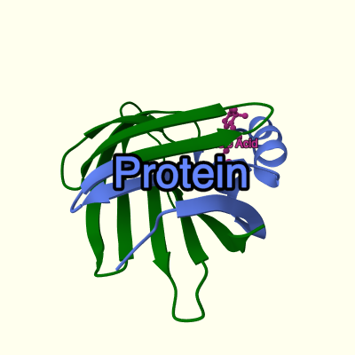

MolViewSpec
MolViewSpec (MVS) is a toolkit for standardized description of reproducible molecular visualizations shareable across software applications. MolViewSpec describes a 3D molecular scene by a MolViewSpec State, a viewer-independent representation that contains all information necessary to reproduce the scene. Thanks to its nested tree-based format, complex scenes can be composed from simple building blocks.
The MolViewSpec toolkit includes:
-
Specification of the MolViewSpec format defines the structure of the MolViewSpec States and the properties of individual nodes of the tree data structure. The specification is provided by this documentation and formalized by the OpenAPI JSON Schema.
-
MolViewSpec builder API provides a mechanism for building and validating MolViewSpec States. The API is available in multiple programming languages:
-
in Python via MolViewSpec Python package
-
in JavaScript/TypeScript via MolViewSpec extension in Mol*
-
-
MolViewSpec viewer extensions provide ability to interpret and render MolViewSpec States in individual molecular viewers. Currently, there is only one viewer extension:
- MolViewSpec extension in Mol*. This extension also serves as the reference implementation for MolViewSpec viewer extensions.
Additional sources
- MolViewSpec home page with plenty of examples
- Interactive Google Colab example showing the MolViewSpec Python package in action
MolViewSpec functionality overview
MolViewSpec uses a tree-based approach to compose complex scenes from simple building blocks. The following list is a high-level overview of these blocks:
- Download - define source of structural data
- Parse - parse structural data in various formats
- Structure - create structure (supports assemblies, crystal symmetry, multi-model structures)
- Transform - apply rotation and translation to a structure
- Component - select substructures (components) of a structure, e.g. by chain identifier or sequence position
- Representation - define structure representation modes (cartoon, ball-and-stick, ...), including support for coarse-grained IHM data
- Color - define custom colors (including opacity) for selections
- Label - define labels (textual representation in the 3D scene)
- Tooltip - define tooltips (text shown when interacting with a component)
- Camera - set camera position and orientation explicitly
- Focus - set camera position and orientation automatically to focus a given component (optionally: render non-covalent interactions)
- Volumetric Data - render electron density data
- Canvas - set background color
- Annotations - create data-driven components, colorings, labels, or tooltips; based on MolViewSpec annotations (additional data stored either in the source structure file (mmcif, bcif) or in an external annotation file referenced by URI)
- Primitives - draw custom ellipses, boxes, arrows, or meshes
- Multiple States & Animations - tell molecular stories by chaining individual scenes and views
MolViewSpec data structure
MVS is based on a tree format, i.e. a molecular view is described as a nested tree where individual nodes represent data operations needed to create the view. Each node is defined by its kind (specifies the type of operation, e.g. download, parse, color) and parameters (provide additional details for the operation, e.g. url, format, selector).
A simple example of a MVS tree showing PDB structure 1cbs:
─root {}
├──download {url: "https://www.ebi.ac.uk/pdbe/entry-files/1cbs.bcif"}
│ └──parse {format: "bcif"}
│ └──structure {type: "model"}
│ ├──component {selector: "polymer"}
│ │ ├──representation {type: "cartoon"}
│ │ │ ├──color {color: "green"}
│ │ │ └──color {selector: {label_asym_id: "A", beg_label_seq_id: 1, end_label_seq_id: 50}, color: "#6688ff"}
│ │ └──label {text: "Protein"}
│ └──component {selector: "ligand"}
│ ├──representation {type: "ball_and_stick"}
│ │ └──color {color: "#cc3399"}
│ └──label {text: "Retinoic Acid"}
├──canvas {background_color: "#ffffee"}
└──camera {target: [17,21,27], position: [41,34,69], up: [-0.129,0.966,-0.224]}
This is a schematic representation of the tree, not the actual data format! Each line represents a node defined by its kind (root, download, parse...) and parameters (everything within {braces}).
Resulting view (created by MolViewSpec extension in Mol*):

This example downloads a structure file from "https://www.ebi.ac.uk/pdbe/entry-files/1cbs.bcif" and creates a structure from it. It defines two components of the structure (polymer and ligand) and applies different 3D representation and color to them (polymer: cartoon representation in green, with residue range 1–50 in chain A selective colored to light blue; ligand: ball-and-stick in magenta). It also adds a label for each component, and sets the camera orientation and background color.
A complete list of supported node kinds and their parameters is described by the MVS tree schema.
An OpenAPI JSON schema is avalaible in molviewspec-v1-openapi-schema.json.
Encoding
MVSJ
A MolViewSpec tree can be encoded and stored in .mvsj format (MolViewSpec JSON), which is basically a JSON representation of the tree with additional metadata. The example above would be encoded as:
{
"metadata": {
"title": "Example MolViewSpec - 1cbs with labelled protein and ligand",
"version": "1",
"timestamp": "2023-11-24T10:38:17.483Z"
},
"root": {
"kind": "root",
"children": [
{
"kind": "download",
"params": {"url": "https://www.ebi.ac.uk/pdbe/entry-files/1cbs.bcif"},
"children": [
{
"kind": "parse",
"params": {"format": "bcif"},
"children": [
...
Complete file: 1cbs.mvsj
MVSX
The MolViewSpec tree can also be stored in a .mvsx format. This is simply a ZIP archive containing:
- main file
index.mvsj(contains the MolViewSpec tree encoded as MVSJ), - any number of other files, such as MVS annotations or structure files.
The advantage of this format is that the main file can reference other files in the archive using relative URIs. Thus the view description along with all necessary data can be stored as a single MVSX file.
It is important that the index.mvsj be at the top level of the archive, not in a subdirectory. When creating the archive from command line:
$ ls example/
annotations-1h9t.cif index.mvsj
$ zip -r example.mvsx example/ # Wrong, won't create a valid MVSX file
$ cd example/; zip -r ../example.mvsx * # Correct
Example: 1ht9.mvsx